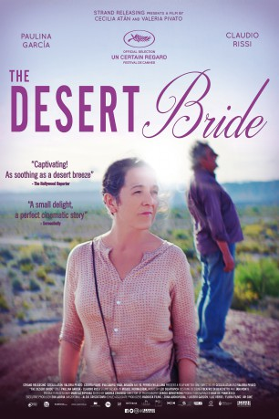

#9447 Señora Teresas Aufbruch in ein neues Leben
Alternativ: Senora Teresas Aufbruch in ein neues Leben
 
 IMDB-Wertung: 6.5 / 10
IMDB-Wertung: 6.5 / 10  Metascore: 68
Metascore: 68 
It tells the story of Teresa, a 54-year-old woman who works as a domestic employee in a family home in Buenos Aires. For decades she has taken refuge in the routine of her tasks, but now that the family has decided to sell the house, her life begins to totter.
Jahr: 2017
Dauer: 73 Minuten
FSK: 6
Land: Argentinien Studio: Arsenal FilmverleihTonspuren:
Untertitel:
Auflösung: SD (720x270) Größe: 515 MB
Genre: Drama
Regisseur: Cecilia Atán, Valeria Pivato
Drehbuch: Cecilia Atán, Valeria Pivato, Martín Salinas
Soundtrack: Leo Sujatovich
Darsteller:
 Paulina García als Teresa Godoy
Paulina García als Teresa Godoy- Claudio Rissi als 'El Gringo' Miguel Alfredo Corbalán
Datei: X:\2017(N-Z)\Señora Teresas Aufbruch in ein neues Leben (2017, FSK6, 720x270).mkv seit 03.09.2018
Festplatte: HD 2017(A-Z)-2018(A-F)
 Es gibt insgesamt 170 Filme in der Gruppe '2017(N-Z)'
Es gibt insgesamt 170 Filme in der Gruppe '2017(N-Z)'